National Park Service
Shortlist Story Map
None of these places are in your current map extent. Zoom out to see places.
+

-
None of these places are in your current map extent. Zoom out to see places.